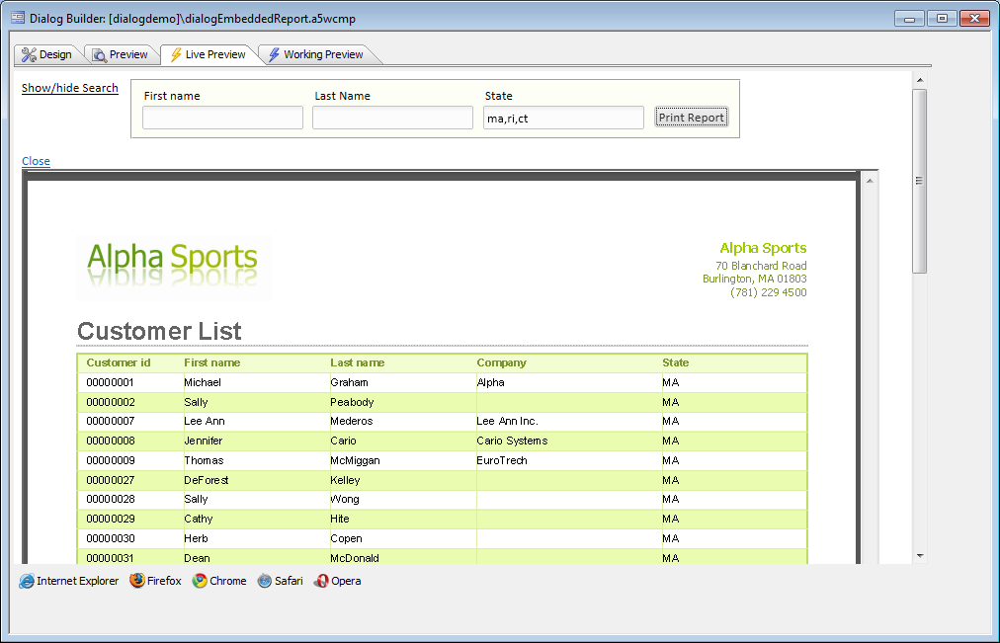
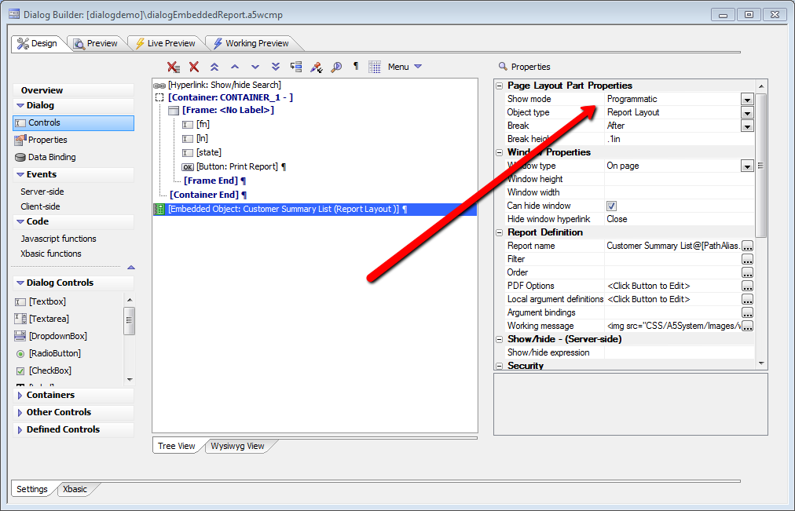
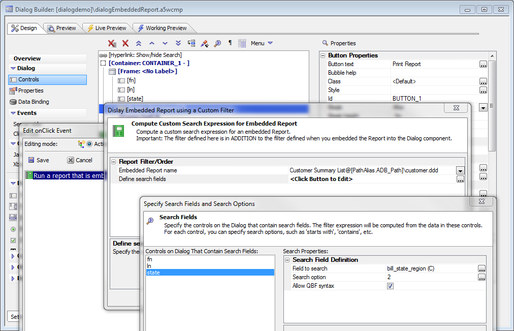
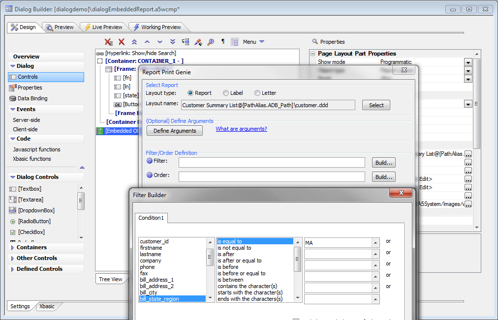
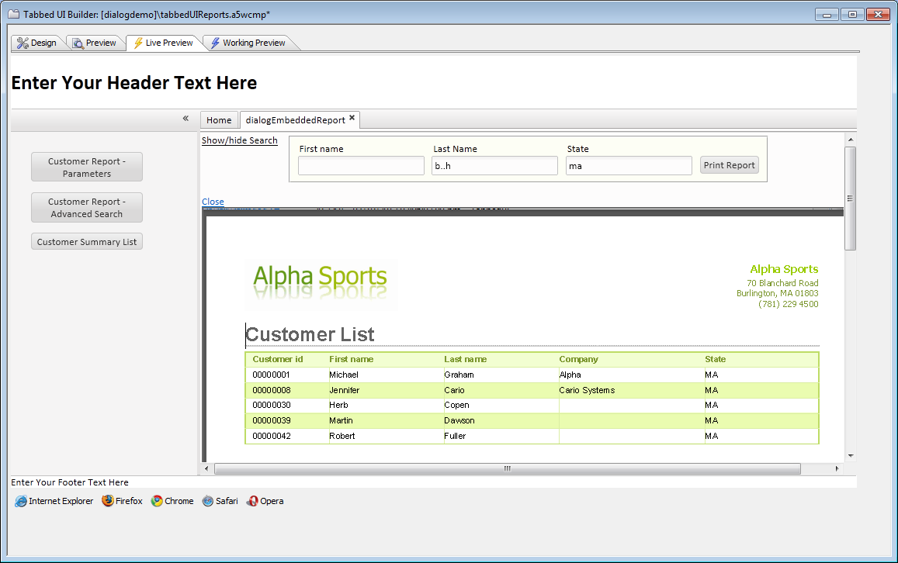

Dialog Component - Power Search for Embedded Report
Requires the Power Search for Reports Embedded in Dialog Components feature pack, included in subscriptionThe Dialog Component can be used to create a 'Search Part' for a Report so that the end-user can enter search ctieria to define exactly which records to display in the report.
How it works

Setup 1: Set the embedded report properties

Setup 2: Set the button Action JavaScript and properties

Watch Video - Part 1
Setup 3 (optional): Set base filter for report. Note that the user filter will be on top of the base filter, i.e. a logical AND between the two.

An example of the utility of the base filter would be a multi-tenant application, where the base filter for the report is set to the Tenant ID.
Watch Video - Part 2
This becomes very useful in a Tabbed user interface, as the user has more freedom to define his report results than he would without the feature pack.

Watch Video - Part 3